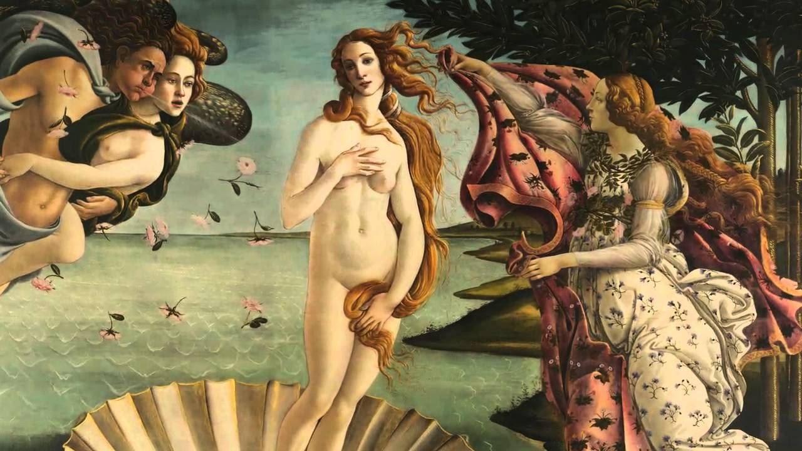
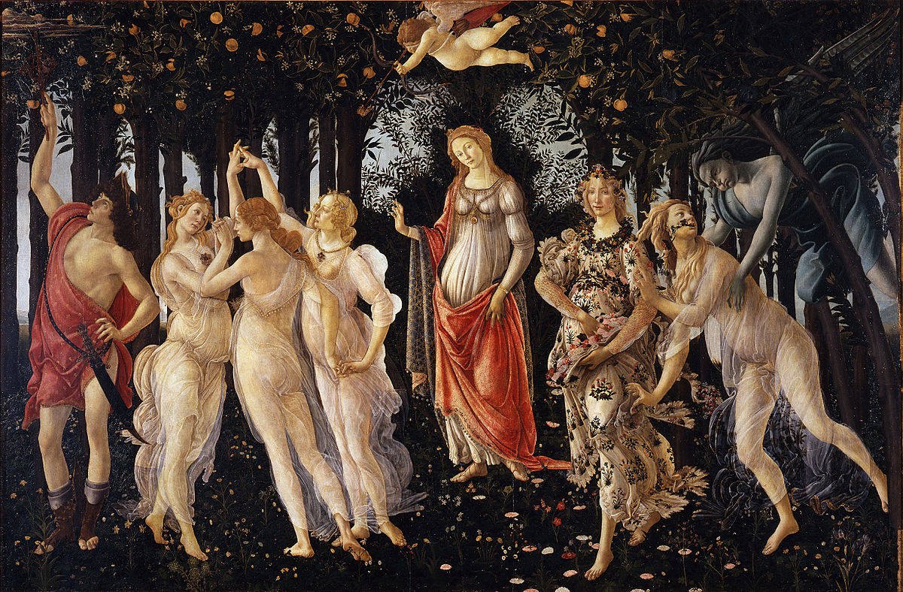
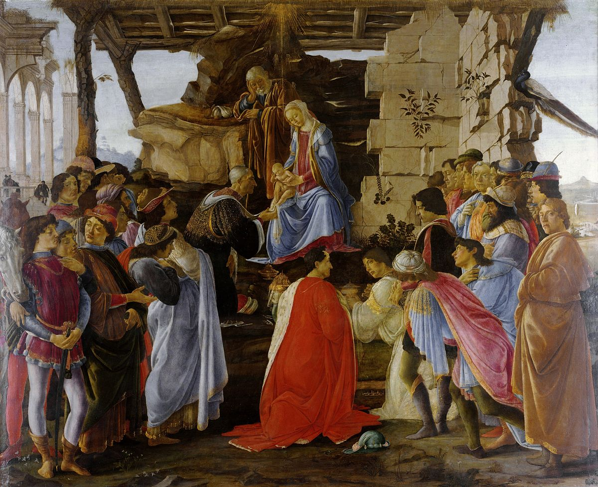

Step 3: Use analysis to illustrate different phases in your chosen artist:
Portfolio
By Abigail Permadhi



Feedback
Abigail Permadhi says:
Your task is to create a portfolio that explores the career of a chosen Renaissance artist. The aim of this project is to allow you to further analyse and thus familiarise yourself with the works of your chosen artist.
Step 1: Choose a Renaissance artist:
Step 1: Choose a Renaissance artist:
Step 2: Pick three paintings by your chosen artist:
Your task is to create a portfolio that explores the career of a chosen Renaissance artist. The aim of this project is to allow you to further analyse and thus familiarise yourself with the works of your chosen artist.
- Step 1: Choose a famous Renaissance artist.
- Step 2: Pick three paintings from different phases of your chosen artists' life by your chosen artist.
- Step 3: Create a portfolio that illustrates different phases in the career of your chosen artist, place each painting in the context of your artist’s personal situation and major artistic movements of the time.
- Step 4: Once completed, you may recieve feedback on your work. You may also place feedback on the work of other members of your peer group.